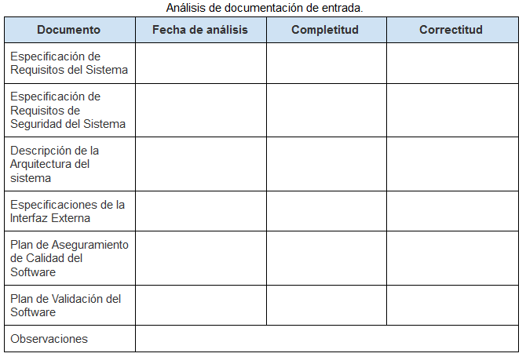
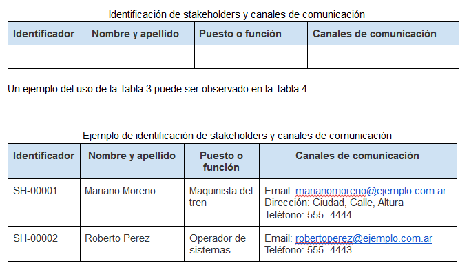
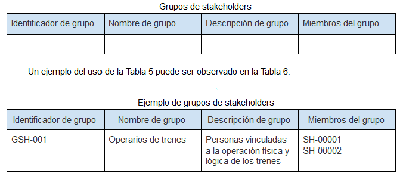
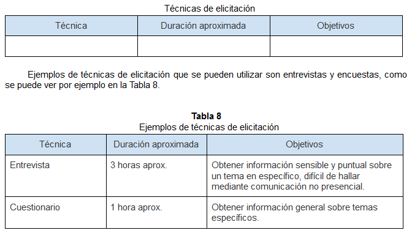
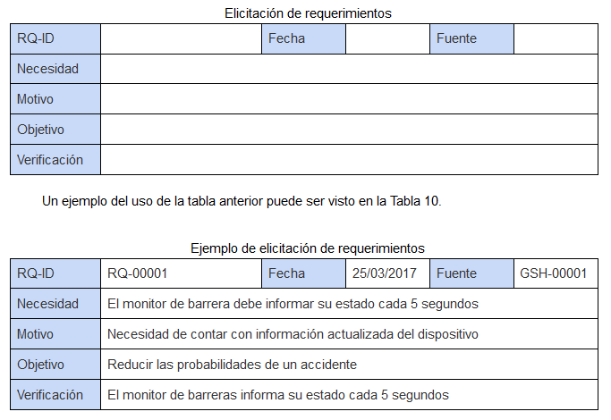

|
1- Realizar un análisis sistemático de la documentación de entrada.
Se debe registar la información del análisis en las filas:
2, 3, 4, 5, 6 y 7 de la siguiente tabla:

|
2- Identificar los stakeholders (interesados) y canales de entrada de los requerimientos.
Los stakeholders serán identificados mediante un valor con el formato SH-XXXXX.
Los grupos de stakeholders serán identificados mediante un valor con el formato GSH-XXX.
Se debe registar la información del análisis en las fila:
2 de las siguientes tablas:

Los stakeholders identificados pueden ser incluidos dentro de grupos para su mejor tratamiento, como se puede ver en la
siguiente tabla:
|
3- Definir el formato y las técnicas de elicitación a utilizar, al igual que la planificación.
Se debe registar la información en
la siguiente tabla:

|
4- Realizar la elicitación de los requerimientos.
Los requerimientos serán identificados mediante un valor con el formato RQ-XXXXX.
Los requerimientos de seguridad serán identificados mediante un valor con el formato RQS-XXXXX.
Se debe registar la información en
la siguiente tabla:

|
|